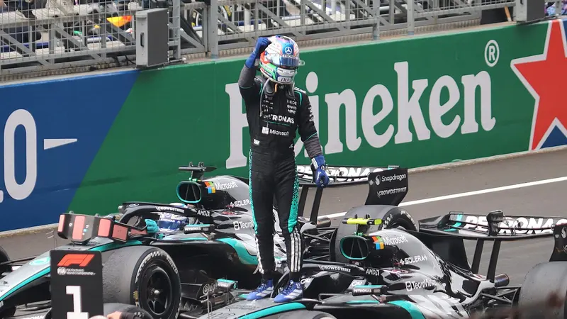

Final Times/Siena polls show Democrats ahead in five of seven key Senate races on the eve of the midterms
ReportedUS · Politics & current affairsPoll released Nov 1; Election Day Nov 3, 2026
The last New York Times/Siena polls of likely voters (taken Oct 23–Nov 1) show Democrats leading in Michigan (El-Sayed 53%, Rogers 42%), Texas (Talarico 50%, Paxton 43%), Maine (Jackson 51%, Collins 45%), Ohio (Brown 49%, Husted 44%) and Kansas (Hamilton 49%, Marshall 44%).
Why it matters Republicans hold the Senate 53-47; CNN notes that winning the four GOP-held seats where Democrats lead outside the margin of error, while holding their own seats, would flip control. Polls are not results.
Read more· full story & 3 sources
Alaska (Peltola 48%, Sullivan 46%) and Iowa (Turek 48%, Hinson 47%) are within the margin of error. Siena's director said a Democratic Senate majority is 'a distinct possibility' but either party could still win it. CBS News, citing the University of Florida Voting Lab, says more than 54 million Americans had already voted early.
Note: Polls are snapshots with margins of error of roughly ±3.4 to ±5 points per state; most fieldwork ended before Haley Stevens endorsed Mike Rogers on Nov 1.
File photo · Abdul El-Sayed at a campaign meet-and-greet, Oct 2025. · Photo: Conlan Houston · CC BY-SA 4.0
ReportedUS · Politics & current affairsUpdated Nov 2, 2026 (first reported Nov 1)
Stevens won't explain her switch to backing Republican Rogers; El-Sayed says he raised $1.2M+ since
In her first interview since endorsing GOP Senate nominee Mike Rogers, Rep. Haley Stevens told CNN's Anderson Cooper her endorsement is 'rock solid' and that 'nothing with me changed', but did not say what changed her mind after she reportedly told Rep.
Why it matters Michigan's open seat is one of the races that decides Senate control; the final Times/Siena poll there (mostly taken before the switch) had El-Sayed up 11.
Read more· full story & 2 sources
Debbie Dingell on Saturday night she would not endorse him. She again cited El-Sayed's ties to streamer Hasan Piker and an outside group's ad tying grocery costs to the war in Gaza, which El-Sayed's campaign says it had nothing to do with. Her chief of staff said most of her congressional staff resigned. El-Sayed's campaign told CBS it raised more than $1.2 million after the endorsement.
Note: Ongoing: the endorsement itself led the Nov 1 Evening Edition.
Link opened (HTTP 200) · automated link check, Nov 2, 9:14 AM EST (checks the link opens, not the claims)
File photo · The Lincoln Memorial Reflecting Pool after its restoration, June 17, 2026. · Photo: G. Edward Johnson · CC BY 4.0
ReportedOfficial statementUS · Politics & current affairsNov 2, 2026
Trump set to close the campaign at the Reflecting Pool; says he'll be 'Mr. Veto' if Democrats win Congress
President Trump was scheduled to hold telerallies and an afternoon event Monday at the Lincoln Memorial Reflecting Pool, whose troubled renovation he has championed; as of this morning's edition the event had not yet taken place.
Why it matters Trump's planned closing message frames Tuesday as a vote on his agenda; a Democratic Congress would mean divided government for his last two years.
Read more· full story & 2 sources
He finished his in-person rallies Sunday in Iowa and Kansas. In a New York Post podcast taped Friday and released Monday, he said that if Republicans lose, 'I veto everything' until Democrats come to make deals. CBS notes the Justice Department has acknowledged in court that a contractor's 'botched installation', not vandals as Trump claimed, caused the pool's peeling paint.
Link opened (HTTP 200) · automated link check, Nov 2, 9:14 AM EST (checks the link opens, not the claims)
File photo · A Learjet 60, the same model, photographed in 2026. It is not the aircraft that crashed. · Photo: ZLEA · CC BY-SA 4.0
ReportedUS · Human interestNov 1, 2026 (updated Nov 2)
All nine aboard killed as a Learjet nose-dives onto a road in Palm Beach County, Florida
A Learjet 60 flying from Austin, Texas, to North Eleuthera in the Bahamas crashed onto Military Trail near Cresthaven around 12:50 p.m. ET Sunday, killing all nine people on board, Transportation Secretary Sean Duffy said.
Why it matters The victims and the cause, including the role of bad weather, are not yet known; the NTSB investigation will take months.
Read more· full story & 2 sources
Air-traffic audio has a crew member reporting ice, turbulence and precipitation, then a descent of 20,000 feet per minute. Gov. Ron DeSantis said no one on the ground was reported hurt; about 600 residents of a nearby mobile-home park were evacuated and officials say the road will be closed for at least 30 days. The victims have not been named; the NTSB and FAA are investigating.
Link opened (HTTP 200) · automated link check, Nov 2, 9:14 AM EST (checks the link opens, not the claims)
Canada4 stories
File photo · The Ambassador Bridge between Windsor, Ont., and Detroit, a key Canada-U.S. trade crossing, June 2025. · Photo: Crisco 1492 · CC BY-SA 4.0
ReportedUnnamed sourcesCanada · Business & techUpdated Nov 2, 2026 (first reported Nov 1)
Formal Canada-U.S. trade talks expected to resume within days; Trump says the two sides have 'the concept of a very good deal'
After a Saturday call Prime Minister Mark Carney called a 'good conversation', a source told The Globe and Mail that Trump ordered his team to resume formal talks, with negotiations expected to start in a few days and pick up where they stalled, including on autos.
Why it matters Tariffs have hit Canadian autos, steel and other exports; a restart could shape Thursday's federal budget and the wider economy.
Read more· full story & 2 sources
Speaking in Iowa on Sunday, Trump said the countries were 'very close' and had 'the concept of a deal' that would be 'great for our farmers' and 'fine for Canada too'. Canada walked away from the table in August.
Note: Ongoing: the Carney-Trump call was in the Nov 1 Evening Edition. The talks restart comes from one unnamed source; no date has been announced.
Automated access blocked (HTTP 403); not evidence of a broken link or inaccurate reporting · automated link check, Nov 2, 9:14 AM EST (checks the link opens, not the claims)
Western Canada didn't fall back: B.C., Alberta, Manitoba, northwestern Ontario and N.W.T. stay on daylight time
Clocks did not change on Sunday across British Columbia, Alberta, Manitoba, northwestern Ontario and the Northwest Territories, which chose year-round daylight time.
Why it matters Much of Canada is now on a different clock relationship with the U.S. and the rest of the country, which matters for travel, cross-border business and scheduling.
Read more· full story & 2 sources
Mornings will be darker: by late December the sun won't rise until about 9:30 a.m. in Winnipeg and 9:50 a.m. in Edmonton. The Canada Border Services Agency shifted hours at 26 land crossings to match U.S. states, Lloydminster no longer has to juggle two times, and schools and ski hills are adjusting; airlines and phone carriers say operations are normal.
External reader audit, Nov 2 2026: Limit — CBC page could not be accessed in that audit, so CBC-sourced claims are unassessed (an access failure is not evidence of a broken link or inaccurate reporting)
Link opened (HTTP 200) · automated link check, Nov 2, 9:14 AM EST (checks the link opens, not the claims)
Link opened (HTTP 200) · automated link check, Nov 2, 9:14 AM EST (checks the link opens, not the claims)
File photo · Parliament of Antigua and Barbuda in St. John's, 2014. · Photo: Jeffrey Beall · CC BY 3.0
ReportedCanada · Politics & current affairsNov 2, 2026
Carney heads to Antigua for the Commonwealth summit as its chief pitches the bloc as an alternative to U.S. trade
Prime Minister Mark Carney leaves Monday for his first Commonwealth Heads of Government Meeting in St. John's, Antigua and Barbuda, where King Charles presides over ceremonies on Tuesday.
Why it matters It is part of Carney's push to diversify trade away from the U.S., and it overlaps with U.S. Election Day.
Read more· full story & 2 sources
Secretary-General Shirley Botchwey told CBC that all 56 members 'had been slapped with tariffs' and that intra-Commonwealth trade, about $900 billion, should more than double. Canadian officials say Canada does about $100 billion a year in trade with Commonwealth partners. Carney is expected back in Ottawa after Tuesday to prepare Thursday's federal budget.
External reader audit, Nov 2 2026: Limit — CBC page could not be accessed in that audit, so CBC-sourced claims are unassessed (an access failure is not evidence of a broken link or inaccurate reporting)
Link opened (HTTP 200) · automated link check, Nov 2, 9:14 AM EST (checks the link opens, not the claims)
Link opened (HTTP 200) · automated link check, Nov 2, 9:14 AM EST (checks the link opens, not the claims)
ReportedOpinionCanada · Human interestNov 2, 2026
Ontario drops its minimum sleeping-space rule for jails; civil liberties groups want it back
Ontario amended its Building Code last month to remove a requirement of at least 4.7 square metres of sleeping area per person in provincial adult jails.
Why it matters Most people in Ontario's provincial jails are awaiting trial, and courts have criticized overcrowding there.
Read more· full story & 1 source
The Solicitor General's office says the change aligns with the National Building Code and helps add more than 2,500 permanent jail spaces; it says the old rule blocked adding a top bunk to an eight-square-metre cell. The Canadian Civil Liberties Association and Elizabeth Fry Societies say it was made without consultation and will normalize double and triple bunking, with northern jails such as Thunder Bay's hit hardest.
External reader audit, Nov 2 2026: Limit — CBC page could not be accessed in that audit, so CBC-sourced claims are unassessed (an access failure is not evidence of a broken link or inaccurate reporting)
Link opened (HTTP 200) · automated link check, Nov 2, 9:14 AM EST (checks the link opens, not the claims)
Hong Kong4 stories
Official statementHong Kong · Politics & current affairsNov 2, 2026 (HKT)
John Lee heads to Beijing and Shanghai for an economic symposium and the China International Import Expo
Chief Executive John Lee leaves Tuesday for the 29th Beijing-Hong Kong Economic Cooperation Symposium, where he will speak at Wednesday's opening, and meets Beijing officials.
Why it matters The trip ties Hong Kong's economic plans to Beijing's next five-year plan, which shapes funding and policy for the city.
Read more· full story & 2 sources
He then goes to Shanghai for Thursday's opening of the ninth China International Import Expo and the Hongqiao forum, visits the Hong Kong exhibition area and returns Friday. Chief Secretary Chan Kwok-ki will be Acting Chief Executive.
Donna Daily replacement-link check (Nov 2, 9:10 AM EST): supports — precise release replacing the daily press-release index; Lee departs Nov 3 for the 29th Beijing-Hong Kong Economic Cooperation Symposium and the ninth CIIE
Link opened (HTTP 200) · automated link check, Nov 2, 9:14 AM EST (checks the link opens, not the claims)
File photo · Wang Fuk Court in Tai Po, pictured in 2009. · Photo: WiNG · CC BY-SA 3.0
Official proposalHong Kong · Politics & current affairsUpdated Nov 2, 2026 (reforms announced last week)
Homeowners to get a 'one-stop' liaison officer for major repair projects under post-Tai Po fire reforms
Deputy Financial Secretary Michael Wong, acting housing secretary, told a Legislative Council panel that each major estate maintenance project will get a liaison officer to handle owners' questions and complaints.
Why it matters The reforms respond to the Wang Fuk Court fire, which killed 168 people last year, and affect anyone living in a block facing major repairs.
Read more· full story & 1 source
The Housing Bureau's Independent Checking Unit is being replaced this month by a Public Housing Building Control Section with project teams. Wong said AI will be used to flag anomalies in documents, but people will make final decisions.
Note: Ongoing: the reform package and inquiry report were in Edition 1 and the Evening Edition (Nov 1).
Link opened (HTTP 200) · automated link check, Nov 2, 9:14 AM EST (checks the link opens, not the claims)
File photo · The new Huanggang Port, Shenzhen side of the Lok Ma Chau crossing, Aug 2026. · Photo: Sir1L0n · CC0 (public domain)
Official figuresHong Kong · Business & techOct 30–Nov 1, 2026 (reported Nov 2)
About 600,000 visitors over the Halloween weekend, up 34%, with record crossings at Huanggang
Chief Secretary Chan Kwok-ki said about 600,000 visitors arrived Friday through Sunday, about 470,000 from the mainland and 130,000 from elsewhere, up 34% from a year earlier.
Why it matters Tourism and spending are key to Hong Kong's recovery, and the crowds test cross-border transport.
Read more· full story & 2 sources
More than 150,000 people a day crossed at the Lok Ma Chau–Huanggang control point on both Saturday and Sunday, a record, and more than 20,000 left through it between midnight and 2 a.m. on Nov 1. He said bar takings were up 30–50% over the past two weekends and the Wine & Dine Festival drew 171,000 visits.
Link opened (HTTP 200) · automated link check, Nov 2, 9:14 AM EST (checks the link opens, not the claims)
File photo · Two International Finance Centre, home of the HKMA offices, 2008. · Photo: WiNG · CC BY 3.0
Official statementHong Kong · Business & techNov 2, 2026 (HKT)
HKMA pilot lets its 12 participating banks settle tokenised deposits 24/7 in tokenised central-bank money
The Hong Kong Monetary Authority said EnsembleTX, the controlled pilot phase of its Project Ensemble, now supports 24/7 interbank settlement of tokenised-deposit transactions in tokenised central bank money for participating banks.
Why it matters It is a step toward money moving outside banking hours, part of Hong Kong's bid to lead in tokenised finance during FinTech Week, though for now only within the pilot.
Read more· full story & 2 sources
Since its launch in November 2025 the pilot had settled these transactions through the HKD Real Time Gross Settlement (RTGS) system; the HKMA says the new capability allows settlement beyond conventional operating hours. Participation grew to 12 banks, including HSBC, Standard Chartered and Bank of China (Hong Kong), and 20 'industry pioneer' firms such as BlackRock and Ant International. The SFC's chief executive said it enables round-the-clock corporate treasury and tokenised-fund trading. It remains a controlled pilot for participating banks and firms, not a general service.
Donna Daily replacement-link check (Nov 2, 9:10 AM EST): supports — precise release replacing the daily press-release index; same HKMA text (pilot phase, 24x7 settlement, 12 banks and 20 industry pioneers)
Link opened (HTTP 200) · automated link check, Nov 2, 9:14 AM EST (checks the link opens, not the claims)
China4 stories
File photo · People's Bank of China headquarters, Beijing, 2016. · Photo: Max12Max · CC BY-SA 4.0
ReportedAnalysisChina · Business & techNov 2, 2026
China's central bank switches its main policy rate to an overnight rate at 1.25%
The People's Bank of China injected 541 billion yuan through overnight reverse repos at 1.25% on Monday, the first operation under a new framework that makes the overnight rate its main policy rate instead of the seven-day rate.
Why it matters It changes how China signals borrowing costs, and it comes as credit worries at state developer Zhuhai Huafa have rattled bond markets.
Read more· full story & 3 sources
It will run overnight operations every working day. Analysts quoted by Reuters said it works like a targeted 15-basis-point cut for financial institutions, though Citi called it a 'mark-to-market adjustment' and does not expect a loan prime rate cut in November.
Automated access blocked (HTTP 403); not evidence of a broken link or inaccurate reporting · automated link check, Nov 2, 9:14 AM EST (checks the link opens, not the claims)
Link opened (HTTP 200) · automated link check, Nov 2, 9:14 AM EST (checks the link opens, not the claims)
File photo · The Great Hall of the People, Beijing, June 2021. · Photo: N509FZ · CC BY-SA 4.0
Official statementChina · Politics & current affairsNov 1–2, 2026
Oman's sultan makes first-ever state visit to China; joint statement urges U.S.-Iran talks and reopening Hormuz
Sultan Haitham bin Tarik held talks with Xi Jinping in Beijing on Monday, the first visit by an Omani sultan in 48 years of diplomatic ties.
Why it matters China is Oman's biggest trading partner, and Oman is a key mediator in the Iran war that is choking Gulf oil shipping.
Read more· full story & 3 sources
The two sides signed a currency-swap agreement, 14 memorandums (including AI, BeiDou navigation, space and digital currency) and a protocol on date exports. Their joint statement called on the U.S. and Iran to reach a comprehensive ceasefire, return to the 'Islamabad memorandum' and restore safe navigation through the Strait of Hormuz.
World Internet Conference opens in Wuzhen with 100+ kinds of 'embodied AI' robots on show
The 2026 World Internet Conference Wuzhen Summit runs Nov 2–5 in Zhejiang province. Its 'Light of Internet' expo opened Monday with more than 1,000 products from 671 companies in 54 countries and regions, including satellite internet and 6G technology and over 100 types of robots for factories, health care and elder care, according to CCTV as reported by the UAE's WAM.
Why it matters It is China's showcase for its tech industry and its push to shape global internet and AI rules.
Read more· full story & 2 sources
The main opening forum is scheduled for Tuesday.
Note: Exhibit figures come from Chinese state broadcaster CCTV, relayed by the UAE state news agency WAM.
Link opened (HTTP 200) · automated link check, Nov 2, 9:14 AM EST (checks the link opens, not the claims)
ReportedChina · SportsNov 1, 2026
China's best-ever run at the U-17 Women's World Cup ends with a late 2-1 loss to Brazil
Wu Yichen gave China a 42nd-minute lead in the quarterfinal in Morocco, but Brazil's Helena equalized a minute after halftime and scored the winner in the 88th minute.
Why it matters It is the furthest a Chinese team has gone at this tournament, a sign of progress for its youth women's program.
Read more· full story & 2 sources
China had won all three group games, including 3-2 against the United States, and beat France on penalties for its first quarterfinal. Brazil plays Nigeria in Wednesday's semifinal; Japan meets North Korea in the other.
ReportedClaimWorld · Politics & current affairsUpdated Nov 2, 2026 (talks ongoing since late Oct)
Iran says it could reopen the Strait of Hormuz within two days if the U.S. meets its conditions
Foreign Ministry spokesman Esmaeil Baghaei said Monday the two-day timeline, down from seven days proposed in September, shows 'good faith', but 'everything depends' on Washington.
Why it matters Hormuz carries a large share of the world's oil and gas; its closure has pushed up fuel and energy prices worldwide.
Read more· full story & 2 sources
Iran's conditions include ending the war on all fronts, unfreezing assets, lifting oil sanctions and ending the U.S. naval blockade; Foreign Minister Abbas Araghchi added more demands. A deputy foreign minister went to Doha to help draft a preliminary agreement with Qatar mediating. Trump has said there will be no new strikes before the U.S. vote but has not ruled them out afterward. No deal has been announced.
Note: Ongoing: the Qatar-mediated talks were in Edition 1 (Nov 1). Iran's offer is conditional and unverified.
Link opened (HTTP 200) · automated link check, Nov 2, 9:14 AM EST (checks the link opens, not the claims)
ReportedAllegationWorld · Business & techHack Oct 29; updated Nov 1–2, 2026
Binance reopens withdrawals after a $6B+ hack the FBI blames on North Korea; $3.6B net outflow on day one
The world's largest crypto exchange resumed withdrawals in phases on Sunday after more than $6 billion in assets were stolen around Oct. 29, thought to be the biggest crypto theft ever.
Why it matters A run on the biggest exchange tests confidence in crypto markets, and the theft would be a major source of money for sanctioned North Korea.
Read more· full story & 2 sources
The FBI said North Korea's 'TraderTraitor' group was responsible; Trump said 'we don't know if it's North Korea'. Binance said it processed $4.65 billion in withdrawals and $1.01 billion in deposits Sunday, a $3.64 billion net outflow (about 2.1% of assets), and that it has replenished 90% of the stolen tokens with company funds and will cover the rest.
Note: North Korea's role is the FBI's attribution, not a court finding.
Link opened (HTTP 200) · automated link check, Nov 2, 9:14 AM EST (checks the link opens, not the claims)
File photo · Bart De Wever with European Commission President Ursula von der Leyen, March 2025. · Photo: Dati Bendo · CC BY 4.0
ReportedWorld · Politics & current affairsNov 2, 2026
Belgian PM Bart De Wever offers his resignation after budget talks collapse; the king holds off
De Wever went to the palace Monday after his five-party 'Arizona' coalition failed overnight to agree how to find about €10 billion in savings for 2027.
Why it matters A government collapse could mean emergency monthly budgets or new elections in a country that hosts the EU and NATO.
Read more· full story & 2 sources
King Philippe took the resignation 'under consideration', will consult coalition party leaders from Tuesday and meets De Wever again Friday, urging compromise. The split is left-right: Vooruit, CD&V and Les Engagés want more from higher earners; N-VA and MR want spending cuts. Belgium's deficit was 5% of GDP last year, above the EU's 3% limit.
Note: What happens if the king accepts is unclear: Euronews says new elections would follow; VRT says a new majority could in principle be formed without them.
ReportedAllegationWorld · Human interestUpdated Nov 2, 2026 (truce began Oct 27)
Russia resumes strikes on Kherson after the war's longest truce ends; alert apps hacked on both sides
A local ceasefire in Ukraine's Kherson region that let hundreds of people leave Russian-occupied Oleshky ended Sunday night; a Ukrainian official told AFP Russia refused to extend it.
Why it matters The truce was the only real pause in fighting in the full-scale war; its end leaves civilians exposed again as winter power cuts deepen.
Read more· full story & 2 sources
On Monday morning a Russian drone hit a car in Kherson's Korabelny district, wounding two older residents, local authorities said. Ukraine's air-alert app sent fake radiation warnings Sunday night, and Russia said its emergency-warning app suffered a 'massive cyberattack' on Monday. US-mediated talks are due to resume this month.
Note: Ongoing: the Oleshky evacuations were in Edition 1 (Nov 1). Claims about who attacked the apps are unverified.
Link opened (HTTP 200) · automated link check, Nov 2, 9:14 AM EST (checks the link opens, not the claims)

File photo · Kimi Antonelli celebrating after the Chinese Grand Prix, March 2026. · Photo: Liauzh · CC BY 4.0
ReportedWorld · SportsNov 1, 2026
Kimi Antonelli, 20, becomes F1's youngest world champion as Verstappen wins in Mexico City
Mercedes driver Kimi Antonelli clinched the 2026 title by finishing third at the Mexico City Grand Prix, at 20 years and 68 days, breaking Sebastian Vettel's record (23 in 2010).
Why it matters It is a new age record for the sport and Italy's first drivers' title in 73 years, with races still to run.
Read more· full story & 2 sources
He is the first Italian champion since Alberto Ascari in 1953. Max Verstappen won from fifth on the grid, holding off Lewis Hamilton by 0.8 seconds in a race with a red flag after Valtteri Bottas crashed (he got out unaided) and a late safety car. The season continues in São Paulo on Nov. 6–8.
Morning Edition for Monday, Nov 2, 2026, the day before the U.S. midterm elections (Tuesday, Nov 3). Ongoing stories are marked with their earlier dates.
Hong Kong has four stories this morning; Hong Kong's record-warm October (already in Edition 1) was not repeated. The U.S. has four stories, all about the election or breaking news.
Four stories have no photo because we found no suitable openly licensed image: John Lee's Beijing/Shanghai trip, Ontario jails, China's U-17 women's World Cup exit and the Binance hack.
How this edition is sourced. Stories are compiled from the linked sources and the summaries are original. Labels reflect the type of claim (reported by outlets, an official statement, a claim, an allegation or analysis); they are not a verification grade, and not every claim has been independently verified. Follow the links for full reporting.
Automated link check (Nov 2, 9:14 AM EST): 37 of 39 source links opened; 2 blocked or failed automated access (not evidence of a broken link). This checks that links open, not what they say.
How to read the labels
Reported Reported by the linked news outlets; attributed to them, not independently confirmed by Donna Daily.
Official statement A government, official body or company's own statement, figures or proposal, attributed to it.
Claim An assertion by a person, government or group that hasn't been independently confirmed.
Allegation Claimed, charged or argued in court; not proven.
Analysis Interpretation or opinion — the outlet's, an expert's, or Donna Daily's own — marked as such.
Unnamed sources Rests partly on sources the outlet did not name.
State media Relies on state-controlled media (e.g. Xinhua, CCTV, Russian state media).
Labels describe the type of claim a story rests on; they are not a verification grade. Older editions used “Fact”; it is shown as “Reported”. Photos are openly licensed (Wikimedia Commons CC0/public domain/CC BY/CC BY-SA, or US-government public domain), cropped to fit, and credited under each picture. “File photo” means the picture shows the person or place, not the event in the story.